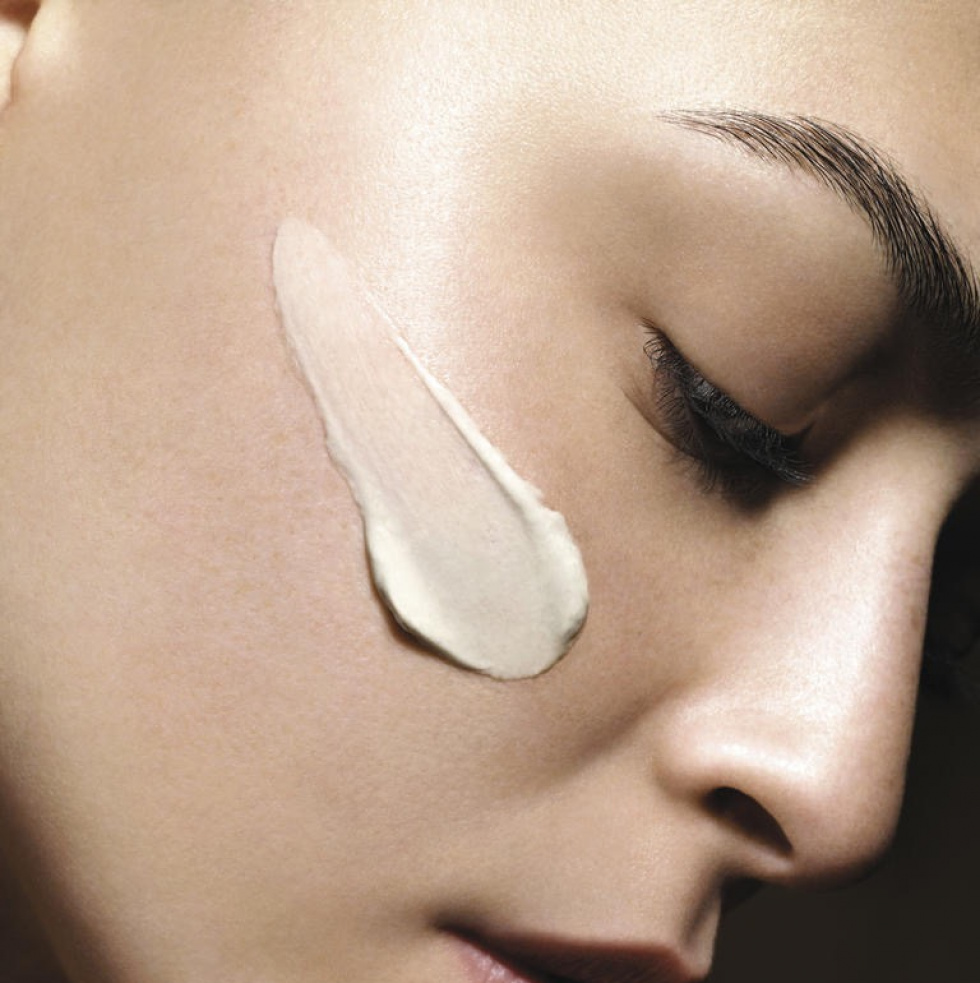
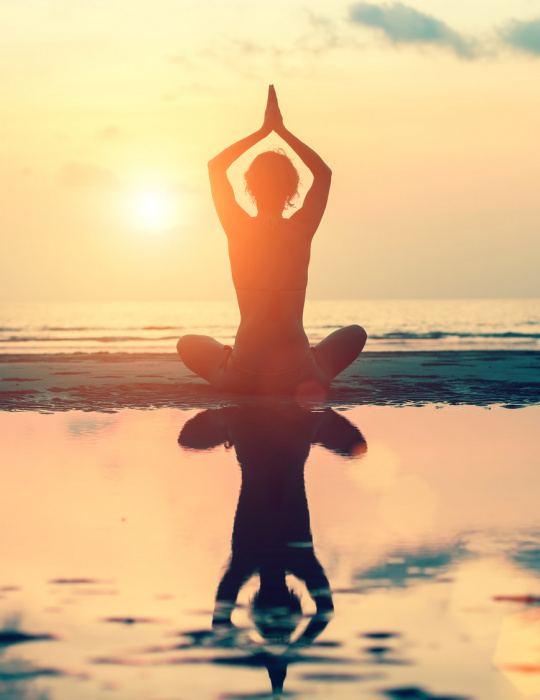
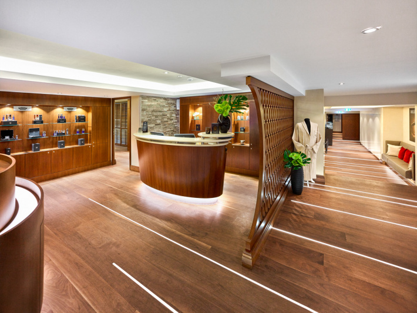

With its impressive, luxurious atmosphere, THE SPA is a haven from the stress of everyday life. Relax in the tasteful rooms featuring warm colours and subdued lighting. Pamper yourself with a massage or treat yourself to an exquisite facial in Frankfurt. No matter if you have had a hectic working day or been busy seeing the sights, if you just want to unwind or need to prepare for a glamourous evening out: qualified professionals will pamper you with high-quality beauty products and ensure that your face will be refreshed and seem younger-looking.
A path for a mind free of worries, a heart free of sadness, a body free of illness and life full of excitement. Are you suffering from severe pain? Yoga asanas pure and authentic form that have been practiced for centuries, integrated with wisdom from ancient scriptures, are brought to you in a format that would help you to improve the quality of daily living. You stretch, you sweat, you laugh, you do more for your body and mind. Yoga exercise that covers all five levels of human existences, mind, body, life force breath (prana), intellect and emotions. Yoga asanas is all natural movements for the body. Pranayama breathing for mind, brain and body helps purification of thoughts. Meditation for memory and emotions.
Do you visit THE SPA at Frankfurt regularly as part of your health and beauty regime? Then take advantage of the many privileges of being a member of the exclusive Club 100. As a member, you can enjoy preferential treatment at THE SPA and VIP offers from or selected partners. Furthermore, your Club 100 membership card gives you access to first-class culinary experiences.